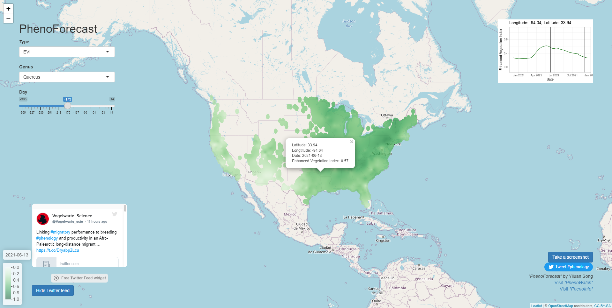
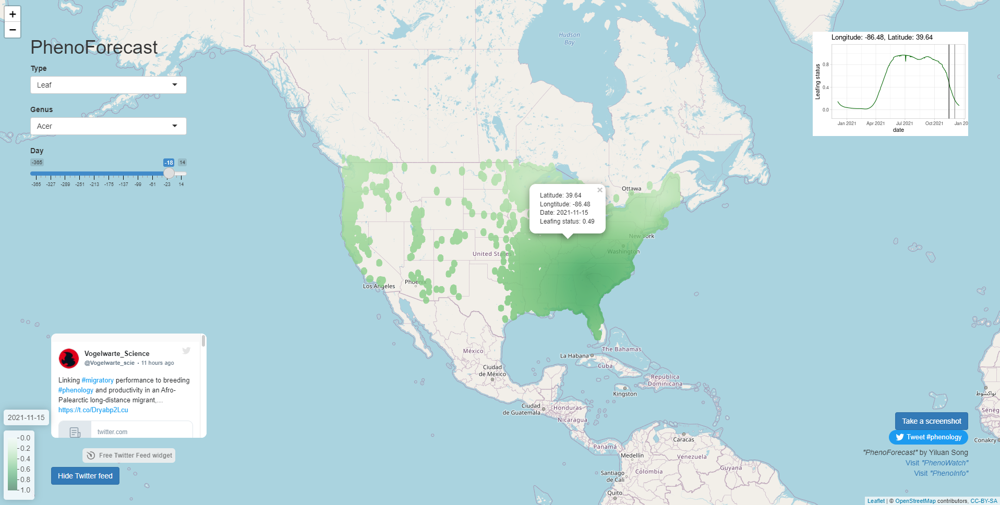
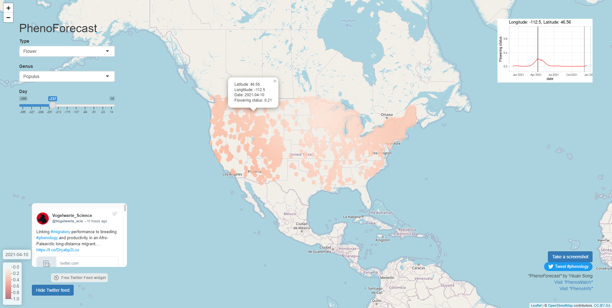

Product

Screenshot of PhenoForecast, showing forecasts of EVI.

Screenshot of PhenoForecast, showing forecasts of leaf phenology.

Screenshot of PhenoForecast, showing forecasts of flower phenology.